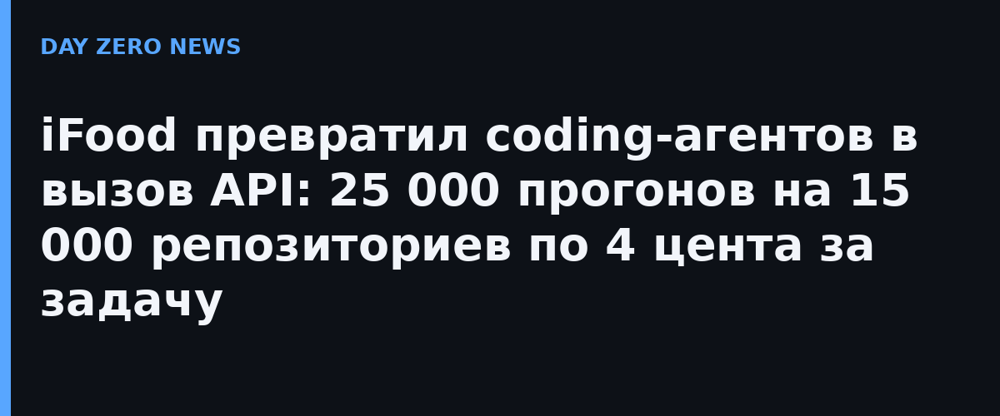

У iFood более 15 000 репозиториев, и каждому периодически нужны рутинные операции: проверить код на внутренние стандарты, починить уязвимые зависимости, прогнать анализ. По отдельности каждая задача тривиальна, но в масштабе целой инженерной организации они превращаются в отдельную инженерную проблему. «Решить это для одного репозитория легко. Сложность — решить это в масштабе», — говорит старший инженер iFood Виктор Коэльо. До платформы каждая команда изобретала своё колесо, и все упирались в одно и то же: не хватало не интеллекта и не кейсов, а исполняющей инфраструктуры — агентского рантайма.
Платформа упаковала агента в облачный сервис с простым интерфейсом: пользователь отправляет промпт и требования к окружению через обычный REST-вызов, задача выполняется на выделенном удалённом раннере в изолированном песочнице, а результат возвращается merge request'ом. Внутри цикл состоит из детерминированных шагов (клонирование репозитория, импорт skills, подготовка ветки — и публикация MR в конце) и агентского исполнения между ними. Песочница работает на Ubuntu со всем нужным iFood набором инструментов — Python, Java, Kotlin, C#, TypeScript, Rust, JavaScript, Go — и доступом к GitLab, Nexus, Docker, Snyk, Kubernetes и AWS. Прогресс каждой задачи наблюдается в реальном времени.
Модель выбирали по трём критериям сразу: интеллект, эффективность и скорость исполнения — на равных чекпоинтах лучше всех сочетание оказалось у GPT-5.6 Luna. При десятках тысяч прогонов средняя стоимость вывода в $0,04 за задачу перестаёт быть мелочью и становится архитектурным решением: именно этот баланс, по словам Коэльо, позволяет масштабировать платформу на новые кейсы устойчиво. Отдельная проблема — автоматически понять, справился ли агент. Её решили OpenAI Structured Outputs: результат сессии обязывают следовать заранее заданному контракту, чтобы успех и провал классифицировались без ручных проверок.
Первым крупным потребителем платформы стала внутренняя система безопасности iFood: она сканирует все 15 000 репозиториев на уязвимые зависимости и сама пытается их чинить. После перехода на агентов число закрытых уязвимостей выросло более чем вдвое. Это удачный паттерн для всех, кто строит агентские конвейеры: детерминированная обвязка до и после, агентное ядро посередине, верификация через структурированный вывод — и старт с внутреннего заказчика с понятной болью и большим объёмом задач.
Новость сама является официальным анонсом: отдельного пресс-релиза компании, кроме публикации в блоге OpenAI, нет — «Оригинал» и «Первоисточник» ведут на одну страницу, крупные СМИ её пока не подхватили.